Pavement Structural Elements
Pavement structural elements are the integrated system of surface, base/sub‑base and improved subgrade layers that together form a uniformly stable, well‑drained foundation capable of supporting traffic loads without moisture‑related or deformation failures[1][2]. By providing a construction platform with reasonably constant gradation, a capillary break between aggregate base and subgrade, and functional drainage paths—including regularly inspected subdrains or retrofitted edge drains—the system distributes loads evenly, mitigates frost action, and prevents pumping that would otherwise cause cracking, faulting, and settlement[2][4]. The design also specifies appropriate slab thickness, joint spacing (15‑20 ft for plain concrete, 30‑40 ft for reinforced), and load‑transfer reinforcement such as dowels or tie bars to ensure good panel interaction, safety, and long‑term serviceability[2][5].
Sources (7)
Purpose and design objectives
The engineering problem that pavement structural elements aim to resolve is the lack of a uniformly stable, well‑drained foundation capable of supporting traffic loads without inducing moisture‑related or deformation failures. Across sources, the need is described as preventing the forceful displacement of soil and water—“Pumping is the forceful displacement of a mixture of soil and water (i.e., mud) from underneath a concrete pavement during application of heavy loads”—and eliminating the primary source of distress identified as weak soils—“Poor subgrade support is the principal cause of pavement distress”. To meet this need, designs must ensure that water does not accumulate in joints—“The proper removal of water from the concrete pavement joint system is an important aspect of preventing joint spalling”—by providing functional drainage paths and regular maintenance—“When drainage outlets become blocked, water cannot escape, so the design must include functional subdrain systems that are cleaned and inspected on a regular schedule (about every two years) or, if absent, retrofitted edge drains that shorten the flow path and lower the local water table”. By combining surface, base/sub‑base, and improved subgrade layers with appropriate compaction and gradation, the structure distributes loads evenly, mitigates frost action, and preserves long‑term pavement integrity. [1][2][3][4][5]
The following figure illustrates pore pressure distribution within the aggregate base and subgrade layers to demonstrate how these structural components manage subsurface water pressures.
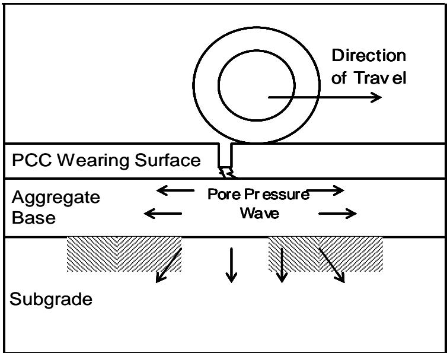
Diagram illustrating the development of pore pressure waves in pavement layers under a moving wheel load. [4]The figure depicts a cross-section of a pavement structure consisting of a PCC Wearing Surface, an Aggregate Base, and a Subgrade layer. A wheel is shown moving in the direction indicated by an arrow, generating a pore pressure wave within the aggregate base that propagates laterally.
[1] — Ch. 4 (pp. 25–26); [2] — Ch. 8 (pp. 223–226), Ch. 10 (pp. 315–331); [3] — Considerations (p. 66), Design (pp. 23–24), Pavement system (p. 14); [4] — Ch. 4 (pp. 233–312); [5] — Ch. 1 (p. 13)
The design of pavement structural elements must satisfy several interrelated objectives. Functionally, the guides state that “The function of the base/subbase layers is to provide a construction platform, increase support, facilitate drainage (if designed as a drainable layer), and to reduce subgrade stresses.” In addition, the system must be a “combination of surface, base/subbase, and improved subgrade layers” that are “constructed for the purpose of supporting traffic.” Structurally, the design must achieve “good load transfer between panels and well‑drained support using appropriate materials” and provide “Proper and uniform placement and consolidation of each of the pavement support layers,” which requires a “reasonably constant gradation” so that it can “allow compaction equipment to produce uniform and stable support,” both described as “essential for good pavement performance.” The thickness must be sufficient: “needs to be thick enough to withstand the stress and fatigue caused by the environment in which it is constructed and the loads under which it must perform over an anticipated lifetime.” Durability is addressed by preventing moisture‑related damage through drainage and a “capillary break or cutoff between the aggregate base and subgrade,” thereby avoiding “Pumping is the forceful displacement of a mixture of soil and water (i.e., mud) from underneath a concrete pavement during application of heavy loads.” that can lead to loss of uniformity, cracking, faulting, and settling as described by “Continued, uncontrolled pumping eventually leads to the displacement of enough soil so that uniformity of the subgrade is destroyed, which can result in cracking, faulting, and settling of the concrete pavement.” Safety is achieved by maintaining a “consistently level riding surface that resists differential movement” and by designing joint spacing so that “spacing of contraction joints is designed at intervals such that potential volumetric changes of the concrete do not result in unintended damage to the pavement (i.e., uncontrolled cracking).” Serviceability is ensured by preventing settlement‑related distress, preserving ride quality throughout the design life, and ensuring the base will last the design life of the pavement. [2][3][4]
The following figure illustrates concrete pavement joint faulting, a distress mechanism that can result from the loss of subgrade uniformity described above.
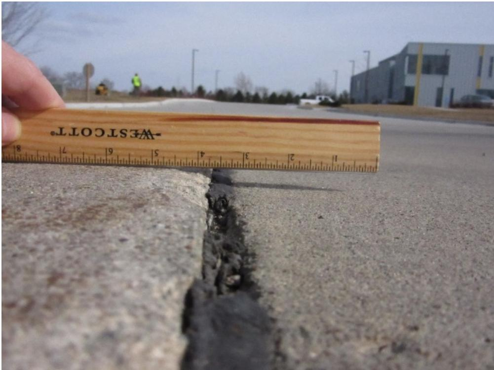
Concrete pavement joint faulting [4]The image displays a close-up view of a concrete pavement surface where two slabs meet at a vertical gap. A wooden ruler is held horizontally across the joint to demonstrate that there is a significant difference in elevation between the left and right sides of the pavement, known as faulting. This condition represents a loss of uniform base or subgrade support, which can result from pumping that expels material at joints and cracks.
[2] — Ch. 8 (pp. 223–226); [3] — Design (pp. 23–24), Pavement system (p. 14); [4] — Ch. 4 (pp. 299–312)
Scope and applicability
The pavement structural elements design approach is appropriate for both flexible and rigid pavements where load distribution, effective drainage, frost‑action mitigation, or construction assistance are required. It is primarily directed toward concrete pavements that rely on joint systems—jointed plain, jointed reinforced, and continuously reinforced types—and where slab thickness, joint spacing, reinforcement, and the characteristics of supporting layers must be addressed.
A layer of specified select material of planned thickness constructed on the subgrade or subbase below a pavement provides the necessary support for these structures. Jointed plain concrete pavement transverse contraction joints are typically spaced at 15 to 20 ft (5 to 6.1 m) in order to control cracking. Transverse contraction joints in JRCP can be spaced farther apart (typically about 30 to 40 ft [9 to 12 m]) because of the steel content.
A subbase is usually advisable for heavier trafficked pavements; a subbase in light duty pavements (e.g., residential and collector streets and parking lots) is not always necessary and depends on underlying soils, drainage, and loads. Bases or subbases are sometimes omitted in the design of low and moderately trafficked pavements.
The proper removal of water from the concrete pavement joint system is an important aspect of preventing joint spalling. If the pavement system has an existing drainage system, such as subdrains, it is critical that the periodic inspection and cleaning of the drainage structure inlets and outlets are performed at approximately 2-year intervals. When an existing pavement begins showing signs of spalling due to moisture, a jurisdiction has the choice to retrofit an existing pavement with an edge drained system. The shortened drainage path is accomplished by tying an aggregate outlet (“french” drain) into the existing granular subbase and daylighting it out to the shoulder foreslope area or installing a pipe edge drain and outletting it to a low point in the profile grade to the foreslope or ditch.
The function of the base/subbase layers is to provide a construction platform, increase support, facilitate drainage (if designed as a drainable layer), and to reduce subgrade stresses. Uniform base material, such as a drainable aggregate base, together with a capillary break or cutoff between the aggregate base and subgrade—provided by a filter layer such as a geotextile woven fabric or a 4‑inch plus or minus dense‑graded aggregate layer—helps prevent fine migration. Experience has shown that the majority of settlements are due to nonuniform subgrade soils, lack of compaction during construction, and inadequate drainage of the foundation layers. [2][3][4]
The following figure illustrates how nonuniform fill materials can lead to differential vertical movement and subsequent longitudinal pavement cracking.
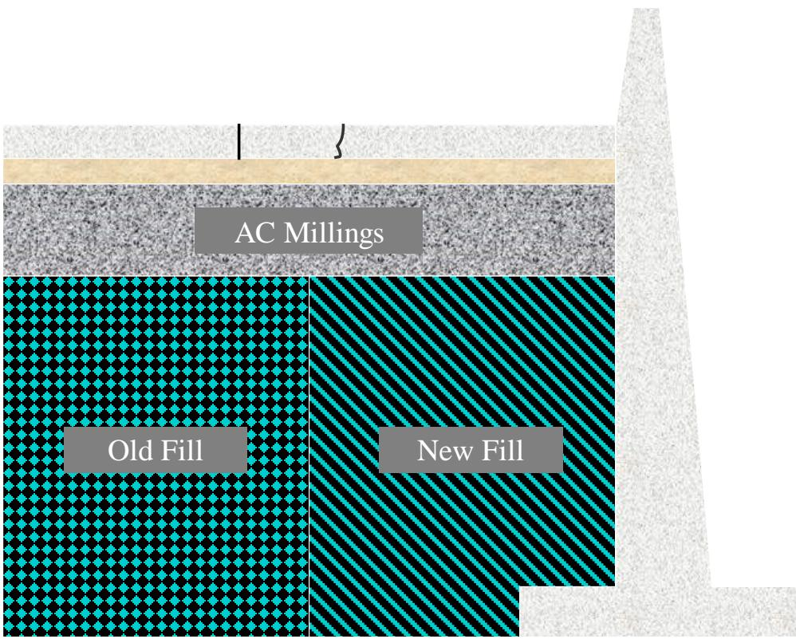
Cross-section of a pavement structure showing differential settlement at the interface between old and new fill materials. [4]The figure displays a vertical cross-section of a pavement system consisting of surface layers, an AC Millings layer, and underlying foundation soils divided into Old Fill and New Fill zones with distinct patterns.
[2] — Ch. 10 (p. 315); [3] — Design (pp. 23–24); [4] — Ch. 4 (pp. 233–312)
The guides indicate that conventional pavement structural element designs become limited when the subgrade or support layers exhibit conditions such as “Pump‑susceptible material beneath the slab”, “Free water between the pavement and subgrade or base”, or “Rapid and large deflections of the pavement slabs”. Likewise, if the base material cannot be kept at a “reasonably constant gradation” and shows “abrupt changes in gradation of base materials”, an alternative strategy is recommended. Poor or otherwise undesirable soils that provide “poor subgrade support” also trigger the need for cement‑based treatments (CMS, CSS, CTB, FDR) to strengthen the foundation. Traffic loading and economic factors further influence the choice: a “subbase in light duty pavements … is not always necessary and depends on underlying soils, drainage needs, and loads”, while “A subbase is usually advisable for heavier trafficked pavements.” When traffic volumes are low to moderate and budgets are tight, designers may omit “Bases or subbases …” because the contribution of these layers is perceived as minimal under current methods. Additionally, when project specifications require durability and compressive‑strength levels that cement‑treated base (CTB) must meet—levels that “Cement-modified soils are not intended to withstand”—alternative design tools such as ACI tables or specialized software may be employed. [2][3][4][5]
The following figure illustrates pavement movement resulting from eroded subbases.
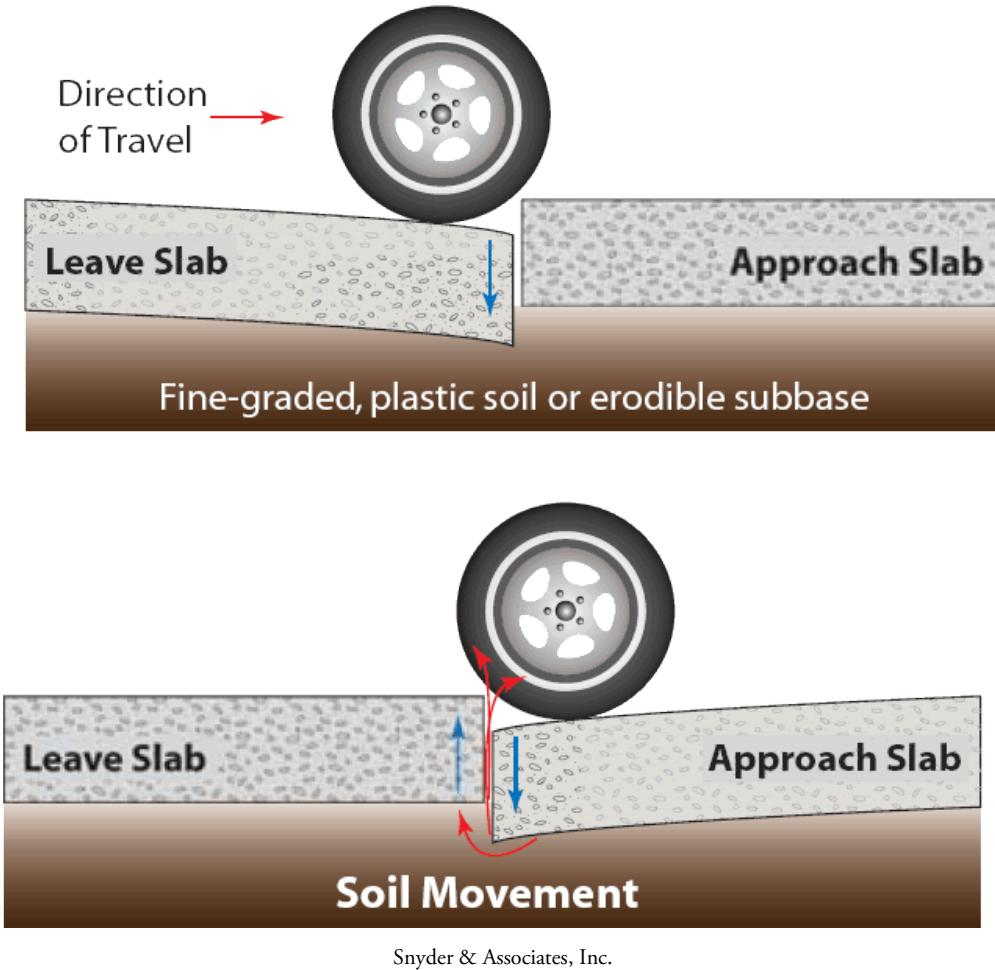
Diagram illustrating pavement movement caused by the erosion of subgrade soil. [4]The figure depicts a vehicle wheel traversing a joint between a ‘Leave Slab’ and an ‘Approach Slab’, which are supported by layers labeled as ‘Fine-graded, plastic soil or erodible subbase’. The bottom panel shows that traffic loading induces ‘Soil Movement’, where the eroded material migrates from beneath the approach slab towards the leave slab. This process demonstrates how poorly drained plastic subgrade soils can exacerbate conditions that promote pumping of subgrade soils out through pavement joints and cracks, leading to settlement.
[2] — Ch. 8 (pp. 223–226); [3] — Considerations (p. 66), Design (pp. 23–24); [4] — Ch. 4 (p. 299); [5] — Ch. 1 (p. 13)
Design inputs and requirements
Designing pavement structural elements calls for a set of site‑specific and performance inputs: an estimate of the traffic loading over the design life, defined failure criteria, and concrete material properties such as strength and stiffness; plus a characterization of drainage capacity in the supporting layers. The decision to include a subbase hinges on site conditions—underlying soil types, existing drainage needs, and anticipated loads—so that heavier‑traffic locations with less favorable soils receive a subbase while lighter‑duty sites may not. [3]
The following figure illustrates a schematic of a typical concrete pavement cross-section that incorporates these structural components.
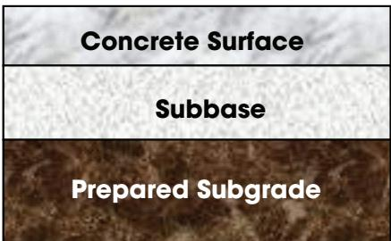
Schematic of typical concrete pavement cross-section [3]The figure displays a vertical stratification consisting of three distinct layers: a top layer labeled ‘Concrete Surface’, a middle layer labeled ‘Subbase’, and a bottom layer labeled ‘Prepared Subgrade’. This visual arrangement illustrates the pavement structure as a combination of a surface course and base/subbase courses placed on a prepared subgrade.
[3] — Design (pp. 23–24)
The governing specifications and performance constraints for pavement structural elements can be summarized as follows:
-
“The most nationally accepted method for concrete pavement design is the American Association of State Highway and Transportation Officials (AASHTO) Design Guide (1993). A major effort is currently underway to regionally calibrate and shift to the new AASHTO Mechanistic-Empirical Pavement Design Guide (M‑E PDG). Other design tools such as tables from the ACI Committee 330 report Guide for the Design and Construction of Concrete Parking Lots, the Continuously Reinforced Concrete Pavement Design and Construction Guidelines (Rasmussen, Rogers, and Ferragut 2009), and the American Concrete Pavement Association’s StreetPave software program can be used to provide satisfactory results.”
-
“For proper selection and guidance for the installation of retrofitted edge drains, refer to the Concrete Pavement Preservation Guide (second edition) (Smith and Harrington 2014). If the pavement system has an existing drainage system, such as subdrains, it is critical that the drainage inlets and outlets be cleaned and inspected periodically, approximately every two years.”
-
“The base for an individual project should have a reasonably constant gradation to allow compaction equipment to produce uniform and stable support. Abrupt changes in gradation of base materials can be nearly as harmful as abrupt changes in subgrade soils.”
-
“Bases or subbases are sometimes omitted in the design of low and moderately trafficked pavements. This decision is generally based on economic considerations The function of the base/subbase layers is to provide a construction platform, increase support, facilitate drainage (if designed as a drainable layer), and to reduce subgrade stresses. Proper and uniform placement and consolidation of each of the pavement support layers place a uniform base material, such as a drainable aggregate base placement of a capillary break or cutoff between the aggregate base and subgrade The capillary cutoff can consist of a filter layer such as a geotextile woven fabric or a 4‑inch plus or minus dense‑graded aggregate layer.” [1][2][3][4]
[1] — Ch. 4 (pp. 25–26); [2] — Ch. 8 (p. 226); [3] — Considerations (p. 66), Design (pp. 23–24); [4] — Ch. 4 (pp. 299–312)
Design methods and criteria
The design and construction of pavement structural elements follows a coordinated sequence of procedures, models, empirical relationships, and software tools. First, the subgrade is evaluated for stability and uniformity; any required modifications are made to improve stability, and surface tolerances are checked to confirm compliance with limits (evaluating subgrade stability and uniformity; modifying the subgrade to improve stability; evaluating surface tolerances). Next, each support layer is placed and compacted uniformly: “Proper and uniform placement and consolidation of each of the pavement support layers.” A drainable aggregate base is installed (“place a uniform base material, such as a drainable aggregate base”). Between the aggregate base and subgrade a capillary break or cutoff is provided (“placement of a capillary break or cutoff between the aggregate base and subgrade”), which may consist of a geotextile fabric or a dense‑graded aggregate layer.
Design thickness, joint spacing, and reinforcement are determined using nationally accepted analytical methods. The primary methodology is “The most nationally accepted method for concrete pavement design is the American Association of State Highway and Transportation Officials (AASHTO) Design Guide (1993).” Mechanistic‑empirical extensions such as the AASHTO M‑E Pavement Design Guide are also employed. Supplementary tools include “Other design tools such as tables from the ACI Committee 330 report Guide for the Design and Construction of Concrete Parking Lots, the Continuously Reinforced Concrete Pavement Design and Construction Guidelines (Rasmussen, Rogers, and Ferragut 2009), and the American Concrete Pavement Association’s StreetPave software program can be used to provide satisfactory results.” and “The Federal Highway Administration’s High Performance Concrete Paving (HIPERPAV) software can be used as an effective tool for designing proper joint spacing.” These resources embed empirical relationships for traffic loading, fatigue stress, drainage, and reinforcement design.
Drainage performance is maintained through scheduled inspection and cleaning of subdrain inlets and outlets at roughly two‑year intervals (“periodic inspection and cleaning of the drainage structure inlets and outlets are performed at approximately 2-year intervals”). When moisture‑induced spalling or blockage occurs, retrofit edge‑drain systems are designed: “tying an aggregate outlet (‘french’ drain) into the existing granular subbase and daylighting it out to the shoulder foreslope area” or “installing a pipe edge drain and outletting it to a low point in the profile grade to the foreslope or ditch.” Selection follows criteria outlined in the Concrete Pavement Preservation Guide. Together, these procedures, equations, mechanistic‑empirical models, empirical relationships, and software tools constitute the comprehensive design methodology for pavement structural elements. [1][2][3][4]
The following figure illustrates a typical pavement surface condition relevant to these structural elements.
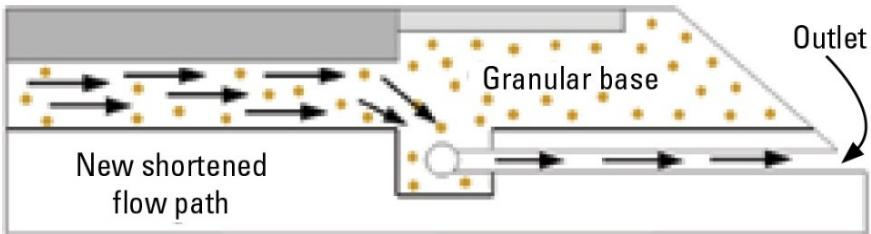
Diagram of a shortened drainage path in pavement structure. [4]The figure illustrates a cross-section of a pavement system where water flow is redirected through a ‘New shortened flow path’ into an outlet. It depicts the integration of a pipe edge drain and an aggregate outlet within the granular base to facilitate drainage.
[1] — Ch. 4 (pp. 25–26); [2] — Ch. 8 (p. 223); [3] — Design (pp. 23–24); [4] — Ch. 4 (pp. 233–312)
The guides require that pavement structural elements satisfy defined performance thresholds, assumptions and reliability criteria. Designs must avoid the three conditions that lead to pumping—pump‑susceptible material beneath the slab, free water between the slab and its subgrade or base, and rapid large deflections under load. Controlling any one of these factors will dramatically reduce the potential for pumping and preserve pavement integrity. A well‑drained support layer and appropriate materials are assumed to provide good load transfer between panels.
The structural design must also meet thresholds that address traffic loading, material strengths, and support characteristics. Design criteria include ensuring slab thickness is sufficient to resist stresses and fatigue over the estimated traffic loading during the design life, while meeting failure criteria, concrete strength, and the stiffness and drainage characterization of supporting layers. Joint spacing is prescribed to control cracking: transverse contraction joints are typically spaced at 15 to 20 ft (5 to 6.1 m) for plain concrete pavement, whereas joints in steel‑reinforced concrete can be spaced about 30 to 40 ft (9 to 12 m). Reinforcement design and subbase requirements are selected based on pavement thickness, material properties, support type, and anticipated loads; heavily trafficked sections generally require a subbase. When cement‑modified soils are used, the design must assume they will not meet the durability and compressive strength levels required for conventional cement‑treated bases, so standard performance thresholds, safety factors, or reliability criteria cannot be directly imposed on those layers.
Base layer consistency is treated as a design criterion; the base should maintain a reasonably constant gradation to allow compaction equipment to produce uniform and stable support, because abrupt changes in gradation of base materials can be nearly as harmful as abrupt changes in subgrade soils. Proper and uniform placement and consolidation of each support layer are required, with a uniform, drainable aggregate base providing long‑term stability. A capillary break or cutoff must be installed between the aggregate base and the subgrade to stop fine particles from migrating into the base; this can be provided by a filter layer such as a woven geotextile fabric or by a dense‑graded aggregate layer approximately 4 inches thick (+/–). Collectively, these criteria constitute the primary thresholds, safety factors, and reliability requirements that ensure durability against settlement, joint spalling, and loss of load‑bearing capacity. [2][3][4]
The following figure illustrates the compaction verification process required to ensure these structural criteria are met.
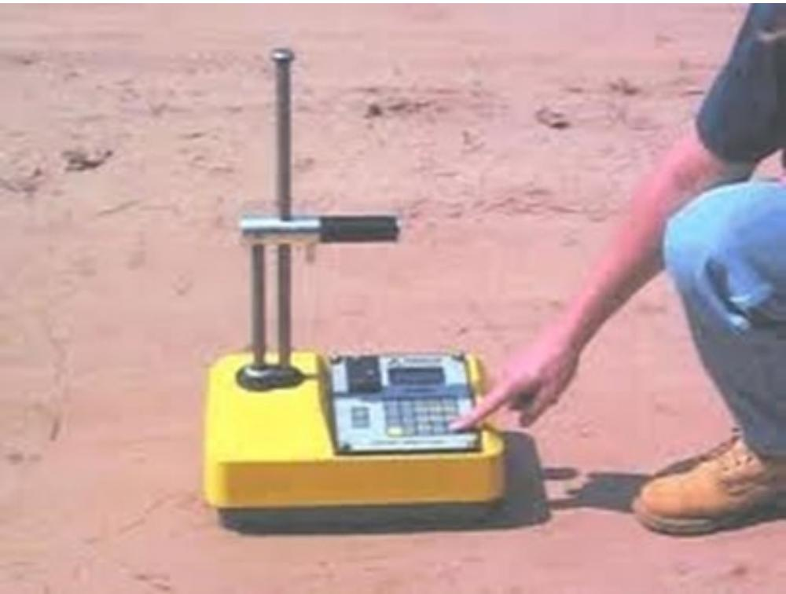
Field technician operating a nuclear density gauge for soil compaction verification. [4]The image displays a yellow field instrument with an integrated control panel and a vertical probe rod, which is being operated by a person kneeling on the ground surface. This apparatus represents one of the various compaction verification methods used to ensure that subgrade layers possess adequate stiffness and uniform consolidation during construction.
[2] — Ch. 8 (pp. 223–226); [3] — Considerations (p. 66), Design (pp. 23–24); [4] — Ch. 4 (p. 312)
Materials and mixture design
The guides require that the base material be uniform and drainable. “The base for an individual project should have a reasonably constant gradation to allow compaction equipment to produce uniform and stable support, which is essential for good pavement performance.” Abrupt changes in gradation are warned against as they can be nearly as harmful as abrupt changes in subgrade soils. For permeable subbase layers the material shall consist of crushed aggregates with a reduced amount of fines and must be stabilized either with Portland cement or with bituminous cement. The concrete slab mix is to be defined by “The structural design must define the concrete mix by stating its required compressive strength and stiffness, together with any steel reinforcement content; this includes specifying the type of reinforcement (dowels, tie bars or continuous bars), their size and spacing.” Reinforcement details such as dowels, tie bars, and continuous steel bars throughout the slab, and their type, size, and spacing must be identified. Supporting layers are required to have a “uniform base material, such as a drainable aggregate base” and a “capillary break or cutoff between the aggregate base and subgrade.” This barrier may be provided by a filter layer such as a geotextile woven‑fabric or by a dense‑graded aggregate layer approximately four inches thick. [2][3][4]
The following figure illustrates a pervious concrete pavement in the rain.
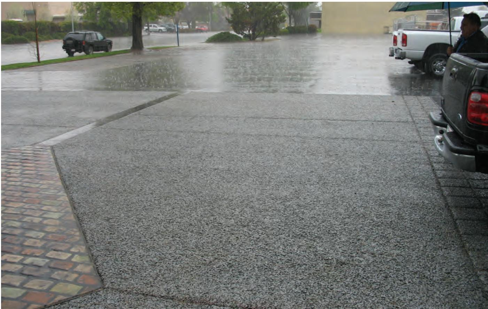
Pervious concrete pavement in the rain [3]The image shows a paved surface with a porous texture that is actively absorbing heavy rainfall, demonstrating its permeability. This visualizes the functional requirement for pervious concrete systems to accommodate water flow through the pavement and subbase layers without pooling on the surface.
[2] — Ch. 8 (p. 226), Ch. 10 (p. 325); [3] — Design (pp. 23–24); [4] — Ch. 4 (p. 312)
“A concrete pavement needs to be thick enough to withstand the stress and fatigue caused by the environment in which it is constructed and the loads under which it must perform over an anticipated lifetime.” Critical inputs for thickness are identified: “Some critical design inputs for calculating thickness include the estimated traffic loading during the design life, failure criteria, concrete strength, and stiffness and drainage characterization of supporting layers.” For the base layer the guides require a consistent gradation: “The base for an individual project should have a reasonably constant gradation” to enable compaction equipment to work effectively: “to allow compaction equipment to produce uniform and stable support,” which is essential for good pavement performance. Abrupt changes are avoided because they “can be nearly as harmful as abrupt changes in subgrade soils.” Uniform placement and consolidation of each support course are mandated: “Proper and uniform placement and consolidation of each of the pavement support layers” using a consistent material: “place a uniform base material, such as a drainable aggregate base.” A capillary break is introduced at the interface: “placement of a capillary break or cutoff between the aggregate base and subgrade,” which may be provided by “a filter layer such as a geotextile woven fabric or a 4-inch plus or minus dense-graded aggregate layer.” For higher‑traffic conditions a subbase is recommended: “A subbase is usually advisable for heavier trafficked pavements,” while in light‑duty settings it may be omitted when soils, drainage and loads permit: “A subbase in light duty pavements (e.g., residential and collector streets and parking lots) is not always necessary and depends on underlying soils, drainage needs, and loads.” By following these material selections and proportioning steps the pavement achieves the required structural strength, durability, constructability, and long‑term performance. [2][3][4]
The following figure illustrates a typical pavement cross-section featuring an RCC base.
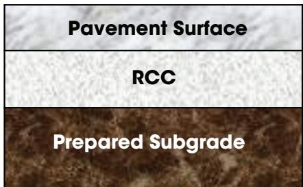
Diagram of a pavement cross-section showing the Pavement Surface, RCC base, and Prepared Subgrade. [3]The figure displays a three-layer pavement structure consisting of a top ‘Pavement Surface’, an intermediate layer labeled ‘RCC’ (Roller-Compacted Concrete), and a bottom ‘Prepared Subgrade’.
[2] — Ch. 8 (p. 226); [3] — Design (pp. 23–24); [4] — Ch. 4 (p. 312)
Structural details and interfaces
The guides require a series of structural details to ensure pavement durability. “Jointed plain concrete pavement transverse contraction joints are typically spaced at 15 to 20 ft (5 to 6.1 m) in order to control cracking.” For jointed reinforced concrete, “Transverse contraction joints in JRCP can be spaced farther apart (typically about 30 to 40 ft [9 to 12 m]) because of the steel content,” and continuously reinforced slabs need no contraction joints. Longitudinal construction joints are placed between lanes, and transverse construction joints occur at the end of each paving day. “Dowels provide load transfer and vertical support for jointed pavements at the transverse joints.” “Tie bars promote aggregate interlock and are most often used along longitudinal joints,” while continuous steel bar reinforcement (wire or deformed) holds random cracks in reinforced slabs. To prevent pumping, “Controlling any one of these three factors by providing good load transfer between panels and well‑drained support using appropriate materials will dramatically reduce the potential for pumping.” The guides also warn against “Pump‑susceptible material beneath the slab” and “Free water between the pavement and subgrade or base.” A capillary break or cutoff is required at the interface between the aggregate base and the subgrade: “placement of a capillary break or cutoff between the aggregate base and subgrade,” which can be achieved by “The capillary cutoff can consist of a filter layer such as a geotextile woven fabric or a 4‑inch plus or minus dense‑graded aggregate layer.” The foundation should “place a uniform base material, such as a drainable aggregate base” to provide adequate support. [2][3][4]
The following figure illustrates the capillary cutoff layer used to prevent fines from entering the granular unstabilized subbase.
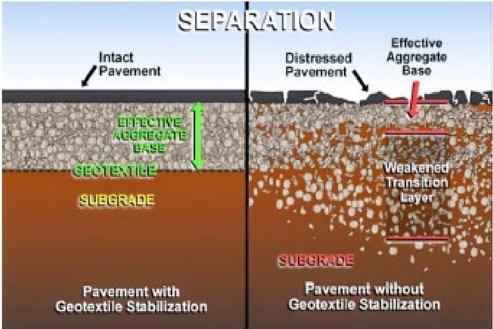
Comparison of pavement cross-sections with and without geotextile stabilization showing the prevention of subgrade fines migration. [4]The figure illustrates a side-by-side comparison of two pavement structures: one utilizing a geotextile layer for separation and one without it. In the unstabilized section, subgrade fines migrate upward into the aggregate base, creating a weakened transition layer that leads to distressed pavement. The stabilized section demonstrates how a geotextile barrier prevents this mixing, maintaining an effective aggregate base and intact pavement.
[2] — Ch. 8 (p. 223); [3] — Design (pp. 23–24); [4] — Ch. 4 (p. 312)
The interfaces between pavement layers are designed to provide reliable load transfer, control moisture, and maintain consistent material properties. Across the guides, good load transfer is achieved by “Controlling any one of these three factors by providing good load transfer between panels and well‑drained support using appropriate materials will dramatically reduce the potential for pumping.” This requires eliminating “Pump‑susceptible material beneath the slab,” preventing “Free water between the pavement and subgrade or base,” and limiting rapid large deflections of concrete panels. Joint layouts are configured to match expected volumetric changes; “Jointed plain concrete pavement transverse contraction joints are typically spaced at 15 to 20 ft (5 to 6.1 m) in order to control cracking,” and “Transverse contraction joints in JRCP can be spaced farther apart (typically about 30 to 40 ft [9 to 12 m]) because of the steel content.” “Load‑transfer devices such as dowels are installed in those joints to provide vertical support, while tie bars are used along longitudinal construction joints to promote aggregate interlock.” Reinforcement type, size, and spacing are selected based on slab thickness, concrete properties, and the stiffness of supporting layers. A “proper and uniform placement and consolidation of each of the pavement support layers” is required, followed by placing a “uniform base material, such as a drainable aggregate base” to create a stable platform for load transfer. To prevent upward migration of fines, a “capillary break or cutoff between the aggregate base and subgrade” is provided using a “filter layer such as a geotextile woven fabric or a 4‑inch plus or minus dense‑graded aggregate layer.” The base course interface is configured so that the base material maintains a “reasonably constant gradation,” avoiding “Abrupt changes in gradation of base materials can be nearly as harmful as abrupt changes in subgrade soils.” For heavier traffic, “A subbase is usually advisable for heavier trafficked pavements”; light‑duty sections may omit it if soils and loads permit. When edge‑drain retrofits are required, the connection is formed by “tying an aggregate outlet (“french” drain) into the existing granular subbase and daylighting it out to the shoulder foreslope area,” creating a short, unobstructed link that must be protected. [2][3][4]
The following figure illustrates the transverse cracking that can result from excessive slab lengths.
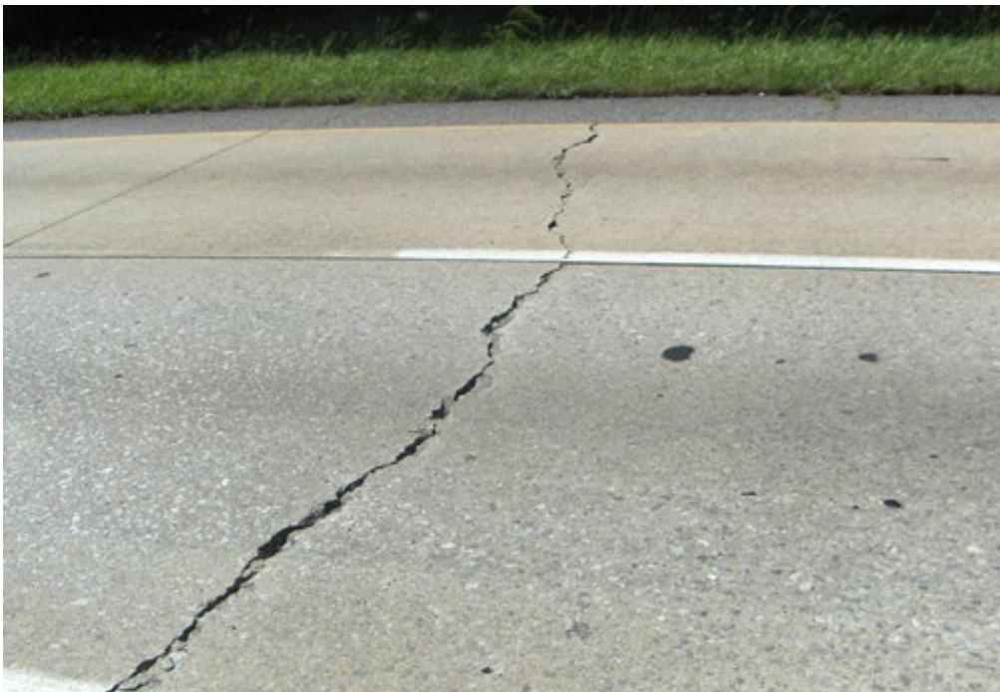
Transverse cracking caused by excessive slab lengths (20-foot panel) [4]The image displays a concrete pavement surface featuring a prominent transverse crack that runs perpendicular to the direction of traffic flow. This failure mode illustrates how improper joint spacing can lead to uncontrolled cracking, as the layout and spacing of transverse joints in concrete pavements is one of the most common factors that can influence the development of transverse and diagonal cracking on concrete pavements.
[2] — Ch. 8 (pp. 223–226); [3] — Design (pp. 23–24); [4] — Ch. 4 (pp. 233–312)
Drainage, environment, and accessibility
The merged guidance emphasizes that pavement structural design must first consider the movement of water through the subgrade and any base or sub‑base layers, using those drainage characteristics as a primary input for thickness calculations. Providing good load transfer between panels together with well‑drained support made from suitable base or sub‑base materials is identified as a key method to eliminate free‑water conditions that can cause pumping, cracking, faulting, or settlement. Where the underlying soil is moisture‑sensitive, designers are instructed to incorporate a capillary break—such as a geotextile fabric or a dense‑graded aggregate layer of about four inches—to stop upward migration of fine particles and water, and to mitigate frost‑related heave in cold climates. Existing drainage features, including subdrains, must be kept functional; the guides state that “If the pavement system has an existing drainage system, such as subdrains, it is critical that the drainage inlets and outlets be cleaned and inspected periodically, approximately every two years.” When moisture‑induced spalling appears, a retrofit option is to install edge or French drains tied into the granular subbase and discharged to a low point, thereby lowering the local water table and shortening flow paths. [1][2][3][4]
The following figure illustrates concrete pavement exposed to these critical surface and subsurface moisture conditions.
 Concrete pavement exposed to surface and subsurface moisture conditions [4]
Concrete pavement exposed to surface and subsurface moisture conditions [4]
The figure depicts a cross-section of a concrete road slab where arrows indicate the infiltration of rainwater through joints into the underlying layers. A rectangular zone is highlighted beneath the pavement, labeled as being “exposed to constant high moisture levels” due to the convergence of surface water and subsurface flow. The diagram illustrates how a lack of drainage allows the subgrade to reach saturation, creating conditions that can lead to pavement failure.
[1] — Ch. 4 (pp. 25–26); [2] — Ch. 8 (p. 223); [3] — Design (pp. 23–24); [4] — Ch. 4 (pp. 95–312)
Design of pavement structural elements must accommodate expected traffic loading, environmental stress, and fatigue by providing sufficient slab thickness and appropriate reinforcement such as dowels, tie bars, or continuous steel to ensure load transfer and crack control. Geometric requirements are expressed through joint layout: transverse contraction joints for jointed plain concrete pavements are placed at regular intervals of roughly fifteen to twenty feet, while jointed reinforced slabs can extend the spacing to about thirty to forty feet because of the added steel. The selection of a subbase is dictated by traffic intensity and underlying soil conditions, with heavier‑traffic applications generally requiring a subbase to support loads and provide drainage. [3]
The following figure illustrates a cross-section of concrete pavement featuring stitching.
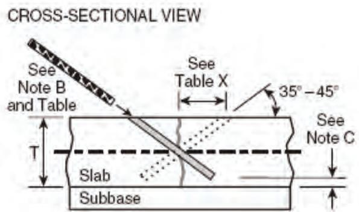
Cross-section of concrete pavement showing stitching repair method. [3]The figure displays a cross-sectional view of a concrete slab resting on a subbase, illustrating the installation of a tie bar to bridge a longitudinal crack. A diagonal hole is drilled through the slab at an angle between 35 and 45 degrees, allowing a reinforcement bar to pass through the crack at mid-depth. This repair method restores load transfer capabilities in pavement structural elements without requiring full slab replacement.
[3] — Design (pp. 23–24)
References
- J. Weiss, M. T. Ley, L. Sutter, D. Harrington, J. Gross, and S. L. Tritsch, "Guide to the Prevention and Restoration of Early Joint Deterioration in Concrete Pavements," National Concrete Pavement Technology Center Iowa State University, Rep. InTrans Project 15-555; TR-697, 2016. [Online]. Available: https://www.cptechcenter.org/wp-content/uploads/2018/03/2016_joint_deterioration_in_pvmts_guide.pdf
- P. Taylor, T. Van Dam, L. Sutter, and G. Fick, "Integrated Materials and Construction Practices for Concrete Pavement: A State-of-the-Practice Manual," National Concrete Pavement Technology Center, Rep. Part of InTrans Project 13-482; TPF-5(286), 2019. [Online]. Available: https://www.cptechcenter.org/wp-content/uploads/2019/12/IMCP_manual.pdf
- S. Garber, R. O. Rasmussen, and D. Harrington, "Guide to Cement-Based Integrated Pavement Solutions," Institute for Transportation, Iowa State University, 2011. [Online]. Available: https://www.cptechcenter.org/wp-content/uploads/2018/08/IPS.pdf
- D. Harrington, M. Ayers, T. Cackler, G. Fick, D. Schwartz, K. Smith, M. B. Snyder, and T. Van Dam, "Guide for Concrete Pavement Distress Assessments and Solutions: Identification, Causes, Prevention, and Repair," National Concrete Pavement Technology Center, 2018. [Online]. Available: https://www.cptechcenter.org/wp-content/uploads/2019/01/concrete_pvmt_distress_assessments_and_solutions_guide_w_cvr.pdf
- J. Gross and W. Adaska, "Guide to Cement-Stabilized Subgrade Soils," National Concrete Pavement Technology Center, Iowa State University, Rep. PCA Special Report SR1007P, 2020. [Online]. Available: https://www.cptechcenter.org/wp-content/uploads/2020/05/guide_to_CSS.pdf
- S. M. Taylor and G. E. Halsted, "Guide to Lightweight Cellular Concrete for Geotechnical Applications," National Concrete Pavement Technology Center, Iowa State University, Rep. PCA Special Report SR1008P, 2021. [Online]. Available: https://www.cptechcenter.org/wp-content/uploads/2021/01/guide_to_LCC_for_geotech_apps.pdf
- G. Smith and J. Gross, "Guide to Concrete Overlays of Asphalt Parking Lots (Second Edition)," National Concrete Pavement Technology Center, 2022. [Online]. Available: https://www.cptechcenter.org/wp-content/uploads/2022/06/overlays_parking_lots_guide_2nd_ed_web.pdf